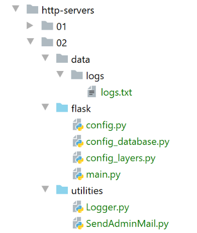

24. Ejercicio práctico: versión 7
24.1. Introducción
La versión 7 de la aplicación de cálculo de impuestos es idéntica a la versión 6, salvo por los siguientes detalles:
- el cliente web lanzará simultáneamente varias solicitudes HTTP. En la versión anterior, estas solicitudes se lanzaban de manera secuencial. Por lo tanto, el servidor solo procesaba una única solicitud a la vez;
- el servidor será multihilo: podrá procesar varias consultas simultáneamente;
- para dar seguimiento a la ejecución de estas solicitudes, se equipará al servidor web con un registrador con el que se registrarán en un archivo de texto los momentos importantes del procesamiento de las solicitudes;
- el servidor enviará un correo electrónico al administrador de la aplicación cuando encuentre un problema que le impida iniciarse, por lo general un problema con la base de datos asociada al servidor web;
La arquitectura de la aplicación no cambia:
La estructura de los scripts es la siguiente:

La carpeta [http-servers/02] se obtiene primero copiando la carpeta [http-servers/01]. Luego se realizan modificaciones en ella.
24.2. Las utilidades

24.2.1. La clase [Logger]
La clase [Logger] permitirá registrar en un archivo de texto ciertas acciones del servidor web:
import codecs
import threading
from datetime import date, datetime
from threading import current_thread
from ImpôtsError import ImpôtsError
class Logger:
# atributo de clase
verrou = threading.RLock()
# constructor
def __init__(self, logs_filename: str):
try:
# se abre el archivo en modo de anexión (a)
self.__resource = codecs.open(logs_filename, "a", "utf-8")
except BaseException as erreur:
raise ImpôtsError(18, f"{erreur}")
# escritura de un registro
def write(self, message: str):
# fecha y hora del momento
today = date.today()
now = datetime.time(datetime.now())
# nombre del hilo
thread_name = current_thread().name
# no queremos que nos interrumpan mientras escribimos en el archivo de registro
# se solicita el objeto de sincronización (= el bloqueo) de la clase; solo un hilo lo obtendrá
Logger.verrou.acquire()
try:
# escritura en el registro
self.__resource.write(f"{today} {now}, {thread_name} : {message}")
# escritura inmediata; de lo contrario, el texto solo se escribirá al cerrar el flujo de escritura
# o se desea hacer un seguimiento de los registros a lo largo del tiempo
self.__resource.flush()
finally:
# liberamos el objeto de sincronización (= el bloqueo) para que otro hilo pueda obtenerlo
Logger.verrou.release()
# liberación de recursos
def close(self):
# cierre del archivo
if self.__resource:
self.__resource.close()
- líneas 10-11: se define un atributo de clase. Un atributo de clase es una propiedad compartida por todas las instancias de la clase. Se hace referencia a él mediante la notación [Classe.attribut_de_classe] (líneas 30, 39). El atributo de clase [verrou] servirá como objeto de sincronización para todos los subprocesos que ejecuten el código de las líneas 31-36;
- líneas 14-19: el constructor recibe el nombre absoluto del archivo de registros. A continuación, se abre este archivo y el descriptor de archivo obtenido se almacena en la clase;
- línea 17: el archivo de registros se abre en modo «añadir» (a). Cada línea que se escriba se agregará al final del archivo;
- líneas 22-39: el método [write] permite escribir en el archivo de registros un mensaje pasado como parámetro. A este se le añaden dos datos:
- línea 24: la fecha del día;
- línea 25: la hora actual;
- línea 27: el nombre del hilo que escribe el registro. No hay que olvidar aquí que una aplicación web atiende a varios usuarios al mismo tiempo. A cada solicitud se le asigna un hilo para ejecutarla. Si este hilo se pone en pausa, típicamente por una operación de entrada/salida (red, archivos, base de datos), entonces el procesador se le asignará a otro hilo. Debido a estas posibles interrupciones, no se puede garantizar que un hilo logre escribir una línea en el archivo de registro sin ser interrumpido. Por lo tanto, existe el riesgo de que se mezclen los registros de dos hilos diferentes. El riesgo es bajo, tal vez incluso nulo, pero, no obstante, se decidió mostrar cómo sincronizar el acceso de dos hilos a un recurso común, en este caso el archivo de registro;
- línea 30: antes de escribir, el hilo solicita la llave de la puerta de entrada. La llave solicitada es la creada en la línea 11. De hecho, es única: un atributo de clase es único para todas las instancias de la clase;
- en el momento T1, un hilo Thread1 obtiene la llave. Entonces puede ejecutar la línea 33;
- en el momento T2, el hilo Thread1 se pone en pausa incluso antes de haber terminado de escribir el registro;
- En el momento T3, el hilo Thread2, que obtuvo el procesador, también debe escribir un registro. Llega así a la línea 30, donde solicita la llave de la puerta de entrada. Se le responde que otro hilo ya la tiene. Entonces se pone automáticamente en pausa. Lo mismo ocurrirá con todos los hilos que soliciten esta llave;
- en el momento T4, el hilo Thread1, que había sido puesto en pausa, recupera el procesador. Entonces termina de escribir el registro;
- líneas 32-36: la escritura en el archivo de registros se realiza en dos pasos:
- línea 33: el descriptor de archivo obtenido en la línea 17 trabaja con un búfer. La operación [write] de la línea 33 escribe en este búfer, pero no directamente en el archivo. Posteriormente, el búfer se vacía en el archivo bajo ciertas condiciones:
- el búfer está lleno;
- el descriptor de archivo es objeto de una operación [close] o [flush];
- línea 36: se fuerza la escritura de la línea de registro en el archivo. Hacemos esto porque queremos ver cómo se intercalan entre sí los registros de los distintos hilos. Si no lo hiciéramos, los registros de un hilo se escribirían todos al mismo tiempo al cerrar el descriptor, en la línea 45. Entonces sería mucho más difícil detectar que algunos hilos se han detenido: habría que revisar las horas en los registros;
- línea 39: el hilo Thread1 devuelve la clave que se le había asignado. Esta podrá asignarse a otro hilo;
- línea 22: el método [write] está, por lo tanto, sincronizado: solo un hilo a la vez escribe en el archivo de registros. La clave del mecanismo está en la línea 30: pase lo que pase, solo un hilo obtiene la clave para pasar a la siguiente línea. La conserva hasta que la devuelve (línea 39);
- líneas 41-45: el método [close] permite liberar los recursos asignados al descriptor del archivo de registros;
Los registros escritos en el archivo de registros tendrán el siguiente aspecto:
24.2.2. La clase [SendAdminMail]
La clase [SendAminMail] permite enviar un mensaje al administrador de la aplicación cuando esta «se cuelga».

La clase [SendAdminMail] se configura en el script [config] [2] de la siguiente manera:
# configuración del servidor SMTP
"adminMail": {
# servidor SMTP
"smtp-server": "localhost",
# puerto del servidor SMTP
"smtp-port": "25",
# administrador
"from": "guest@localhost.com",
"to": "guest@localhost.com",
# asunto del correo
"subject": "plantage du serveur de calcul d'impôts",
# tls en True si el servidor SMTP requiere autorización, en False en caso contrario
"tls": False
}
La clase [SendAdminMail] recibe el diccionario de las líneas 2 a 13, así como la configuración para el envío del correo electrónico. La clase es la siguiente:
# importaciones
import smtplib
from email.mime.text import MIMEText
from email.utils import formatdate
class SendAdminMail:
# -----------------------------------------------------------------------
@staticmethod
def send(config: dict, message: str, verbose: bool = False):
# envía un mensaje al servidor SMTP config['smtp-server'] en el puerto config[smtp-port]
# si config['tls'] es verdadero, se utilizará el soporte TLS
# el correo se envía en nombre de config['from']
# para el destinatario config['to']
#: el mensaje tiene como asunto «config['subject']»
# se encuentra la referencia de un registrador en config['logger']
# se recupera el registrador en la configuración; puede ser igual a None
logger = config["logger"]
# servidor SMTP
server = None
#: se envía el mensaje
try:
# el servidor SMTP
server = smtplib.SMTP(config["smtp-server"])
# modo detallado
server.set_debuglevel(verbose)
# ¿Conexión segura?
if config['tls']:
# Inicio del diálogo de seguridad
server.starttls()
# autenticación
server.login(config["user"], config["password"])
# creación de un mensaje multiparte: este es el mensaje que se enviará
msg = MIMEText(message)
msg['From'] = config["from"]
msg['To'] = config["to"]
msg['Date'] = formatdate(localtime=True)
msg['Subject'] = config["subject"]
# se envía el mensaje
server.send_message(msg)
# registro: es posible que el registrador no exista
if logger:
logger.write(f"[SendAdminMail] Message envoyé à [{config['to']}] : [{message}]\n")
except BaseException as erreur:
# registro: es posible que el registrador no exista
if logger:
logger.write(
f"[SendAdminMail] Erreur [{erreur}] lors de l'envoi à [{config['to']}] du message [{message}] : \n")
finally:
# Se ha terminado: se liberan los recursos utilizados por la función
if server:
server.quit()
- líneas 24-54: aquí se encuentra el código ya analizado en el ejemplo |smtp/02|;
- línea 20: se recupera la referencia de un registrador. Esta se utiliza en las líneas 45 y 49;
24.3. El servidor web

24.3.1. Configuración

La configuración del servidor es muy similar a la del servidor analizado anteriormente. Solo el archivo [config.py] presenta una ligera modificación:
def configure(config: dict) -> dict:
import os
# paso 1 ------
# carpeta de este archivo
script_dir = os.path.dirname(os.path.abspath(__file__))
# ruta raíz
root_dir = "C:/Data/st-2020/dev/python/cours-2020/python3-flask-2020"
# dependencias absolutas
absolute_dependencies = [
# carpetas del proyecto
# BaseEntity, MyException
f"{root_dir}/classes/02/entities",
# InterfaceImpôtsDao, InterfaceImpôtsMétier, InterfaceImpôtsUi
f"{root_dir}/impots/v04/interfaces",
# AbstractImpôtsdao, ImpôtsConsole, ImpôtsMétier
f"{root_dir}/impots/v04/services",
# ImpotsDaoWithAdminDataInDatabase
f"{root_dir}/impots/v05/services",
# AdminData, ImpôtsError, TaxPayer
f"{root_dir}/impots/v04/entities",
# Constantes, tramos
f"{root_dir}/impots/v05/entities",
# IndexController
f"{root_dir}/impots/http-servers/01/controllers",
# scripts [config_database, config_layers]
script_dir,
# Logger, SendAdminMail
f"{script_dir}/../utilities",
]
# se establece la ruta del sistema
from myutils import set_syspath
set_syspath(absolute_dependencies)
# paso 2 ------
# Configuración de la aplicación
config.update({
# Usuarios autorizados a utilizar la aplicación
"users": [
{
"login": "admin",
"password": "admin"
}
],
# archivo de registros
"logsFilename": f"{script_dir}/../data/logs/logs.txt",
# Configuración del servidor SMTP
"adminMail": {
# servidor SMTP
"smtp-server": "localhost",
# puerto del servidor SMTP
"smtp-port": "25",
# administrador
"from": "guest@localhost.com",
"to": "guest@localhost.com",
# asunto del correo
"subject": "plantage du serveur de calcul d'impôts",
# tls en True si el servidor SMTP requiere autorización, en False en caso contrario
"tls": False
},
# duración de la pausa del hilo en segundos
"sleep_time": 0
})
# paso 3 ------
# Configuración de la base de datos
import config_database
config["database"] = config_database.configure(config)
# paso 4 ------
# instanciación de las capas de la aplicación
import config_layers
config['layers'] = config_layers.configure(config)
# se devuelve la configuración
return config
- líneas 40-66: se agregan al diccionario de configuración del servidor los elementos relacionados con el registrador (línea 49) y los relacionados con el envío de un correo electrónico de alerta al administrador de la aplicación (líneas 51-63);
- línea 65: para ver mejor los hilos en acción, vamos a forzar que algunos se detengan. [sleep_time] es la duración de la detención expresada en segundos;
- líneas 27-28: cabe señalar que se utiliza el controlador [index_controller] de la versión 6 anterior;
24.3.2. El script principal [main]
El script principal [main] es el siguiente:
# se espera un parámetro mysql o pgres
import sys
syntaxe = f"{sys.argv[0]} mysql / pgres"
erreur = len(sys.argv) != 2
if not erreur:
sgbd = sys.argv[1].lower()
erreur = sgbd != "mysql" and sgbd != "pgres"
if erreur:
print(f"syntaxe : {syntaxe}")
sys.exit()
# se configura la aplicación
import config
config = config.configure({'sgbd': sgbd})
# dependencias
from flask import request, Flask
from flask_httpauth import HTTPBasicAuth
import json
import index_controller
from flask_api import status
from SendAdminMail import SendAdminMail
from myutils import json_response
from Logger import Logger
import threading
import time
from random import randint
from ImpôtsError import ImpôtsError
# gestor de autenticación
auth = HTTPBasicAuth()
@auth.verify_password
def verify_password(login, password):
# lista de usuarios
users = config['users']
# se recorre esta lista
for user in users:
if user['login'] == login and user['password'] == password:
return True
# no se encontró
return False
# se envía un correo electrónico al administrador
def send_adminmail(config: dict, message: str):
# se envía un correo electrónico al administrador de la aplicación
config_mail = config["adminMail"]
config_mail["logger"] = config['logger']
SendAdminMail.send(config_mail, message)
# verificación del archivo de registros
logger = None
erreur = False
message_erreur = None
try:
# registrador
logger = Logger(config["logsFilename"])
except BaseException as exception:
# registro de consola
print(f"L'erreur suivante s'est produite : {exception}")
# se anota el error
erreur = True
message_erreur = f"{exception}"
# se guarda el registrador en la configuración
config['logger'] = logger
# gestión del error
if erreur:
# correo electrónico al administrador
send_adminmail(config, message_erreur)
# fin de la aplicación
sys.exit(1)
# registro de inicio
log = "[serveur] démarrage du serveur"
logger.write(f"{log}\n")
print(log)
# Recuperación de datos de la administración tributaria
erreur = False
try:
# admindata será un dato de alcance de la aplicación de solo lectura
config["admindata"] = config["layers"]["dao"].get_admindata()
# registro de éxito
logger.write("[serveur] connexion à la base de données réussie\n")
except ImpôtsError as ex:
# se registra el error
erreur = True
# registro de error
log = f"L'erreur suivante s'est produite : {ex}"
# consola
print(log)
# archivo de registros
logger.write(f"{log}\n")
# correo al administrador
send_adminmail(config, log)
# el hilo principal ya no necesita el registrador
logger.close()
# si hubo un error, se detiene
if erreur:
sys.exit(2)
# la aplicación Flask puede iniciarse
app = Flask(__name__)
# Inicio URL
@app.route('/', methods=['GET'])
@auth.login_required
def index():
…
# solo main
if __name__ == '__main__':
# se inicia el servidor
app.config.update(ENV="development", DEBUG=True)
app.run(threaded=True)
- líneas 1-10: el script espera un parámetro [mysql / pgres] que le indique el SGBD que debe utilizar;
- líneas 12-14: se configura la aplicación (ruta de Python, capas, base de datos);
- líneas 16-28: las dependencias necesarias para la aplicación;
- líneas 30-43: gestión de la autenticación;
- líneas 46-51: una función que envía un correo electrónico al administrador de la aplicación;
- la función espera dos parámetros:
- config: un diccionario con las claves [adminMail] y [logger];
- el mensaje que se va a enviar;
- líneas 49-50: se prepara la configuración del envío;
- se envía el correo electrónico;
- líneas 54-74: se verifica si existe el archivo de registros;
- líneas 70-74: si no se logró abrir el archivo de registro, se envía un correo electrónico al administrador y se detiene el proceso;
- líneas 76-79: se registra el inicio del servidor;
- líneas 81-98: se recuperan los datos de la administración tributaria de la base de datos;
- líneas 88-98: si no se lograron obtener estos datos, se registra el error tanto en la consola como en el archivo de registros;
- líneas 100-101: el hilo principal ya no generará registros (los hilos creados no utilizarán el mismo descriptor de archivo);
- líneas 103-105: si no se ha podido conectar a la base de datos, se detiene el proceso;
- línea 122: se inicia el servidor en modo multihilo;
La función [index] (línea 114) es la siguiente:
# Inicio URL
@app.route('/', methods=['GET'])
@auth.login_required
def index():
logger = None
try:
# registrador
logger = Logger(config["logsFilename"])
# se almacena en una configuración asociada al hilo
thread_config = {"logger": logger}
thread_name = threading.current_thread().name
config[thread_name] = {"config": thread_config}
# se registra la solicitud
logger.write(f"[index] requête : {request}\n")
# se interrumpe el hilo si así se ha solicitado
sleep_time = config["sleep_time"]
if sleep_time != 0:
# la pausa es aleatoria para que algunos hilos se interrumpan y otros no
aléa = randint(0, 1)
if aléa == 1:
# registro antes de la pausa
logger.write(f"[index] mis en pause du thread pendant {sleep_time} seconde(s)\n")
# pausa
time.sleep(sleep_time)
# un controlador ejecuta la solicitud
résultat, status_code = index_controller.execute(request, config)
# ¿Hubo un error fatal?
if status_code == status.HTTP_500_INTERNAL_SERVER_ERROR:
# se envía un correo electrónico al administrador de la aplicación
config_mail = config["adminMail"]
config_mail["logger"] = logger
SendAdminMail.send(config_mail, json.dumps(résultat, ensure_ascii=False))
# se registra la respuesta
logger.write(f"[index] {résultat}\n")
# se envía la respuesta
return json_response(résultat, status_code)
except BaseException as erreur:
# se registra el error si es posible
if logger:
logger.write(f"[index] {erreur}")
# se prepara la respuesta para el cliente
résultat = {"réponse": {"erreurs": [f"{erreur}"]}}
# se envía la respuesta
return json_response(résultat, status.HTTP_500_INTERNAL_SERVER_ERROR)
finally:
# se cierra el archivo de registros si se había abierto
if logger:
logger.close()
- línea 4: la función que se ejecuta cuando un usuario solicita el URL /. Debido a que el servidor es multihilo (línea 112), se creará un hilo para ejecutar la función. Este hilo puede interrumpirse y ponerse en pausa en cualquier momento para reanudar su ejecución un poco más tarde. Siempre hay que tener en cuenta este punto cuando el código accede a un recurso compartido por todos los hilos. En este caso, dicho recurso es el archivo de registros: todos los hilos escriben en él;
- línea 8: se crea una instancia del registrador. Por lo tanto, todos los hilos tendrán una instancia diferente del registrador. Sin embargo, todos estos registradores apuntan al mismo archivo de registros. No obstante, es importante señalar que cuando un hilo cierra su registrador, esto no afecta a los registradores de los otros hilos;
- líneas 9-12: se almacena el registrador en el diccionario [config] de la aplicación, asociado a una clave con el nombre del hilo. Así, si hay n hilos ejecutándose simultáneamente, se crearán n entradas en el diccionario [config]. [config] es un recurso compartido entre todos los hilos. Por lo tanto, puede ser necesario sincronizarlos. Aquí he planteado una hipótesis. Supuse que si dos hilos creaban simultáneamente su entrada en el archivo [config] y uno de ellos era interrumpido por el otro, esto no tendría ninguna consecuencia. El hilo interrumpido podría completar posteriormente la creación de la entrada. Si el experimento demostrara que esta hipótesis es falsa, habría que sincronizar el acceso a la línea 12;
- línea 10: se agrega el registrador a un diccionario;
- línea 11: [threading.current_thread()] es el hilo que ejecuta esta línea, es decir, el hilo que ejecuta la función [index]. Anotamos su nombre. Cada hilo tiene un nombre único;
- línea 12: se guarda la configuración del hilo. A partir de ahora, siempre procederemos así: si hay información que no se puede compartir entre los hilos, se incluirá de todos modos en la configuración general, pero asociada al nombre del hilo;
- línea 14: se registra la consulta que se está ejecutando;
- líneas 15-24: de manera aleatoria, ponemos en pausa ciertos hilos para que le dejen el procesador a otro hilo;
- línea 16: se recupera la duración de la pausa (en segundos) de la configuración;
- línea 17: solo hay pausa si la duración de la pausa es distinta de 0;
- línea 19: un número entero aleatorio en el intervalo [0, 1]. Por lo tanto, solo son posibles los valores 0 y 1;
- línea 20: el hilo solo se detiene si el número aleatorio es 1;
- línea 22: se registra en el log que el hilo va a ser interrumpido;
- línea 24: se interrumpe el hilo durante [sleep_time] segundos;
- línea 26: cuando el hilo se reactiva, hace que el módulo [index_controller] ejecute la consulta;
- líneas 28-32: si esta ejecución provoca un error de tipo [500 INTERNAL SERVER ERROR], se envía un correo electrónico al administrador;
- líneas 30-31: se configura el diccionario [config_mail] que se pasará a la clase [SendAdminMail];
- línea 32: el mensaje enviado al administrador es la cadena jSON del resultado que se enviará al cliente;
- líneas 33-34: se registra la respuesta que se enviará al cliente (línea 36);
- líneas 37-44: se procesa una posible excepción;
- líneas 39-40: si existe el registrador, se registra el error que se produjo;
- líneas 47-48: se cierra el registrador, si existe. Al final, el hilo crea un registrador al inicio de la solicitud y lo cierra una vez que esta ha sido procesada;
24.3.3. El controlador [index_controller]
El controlador [index_controller] que ejecuta las solicitudes es el de la versión anterior:

24.3.4. Ejecución
Se inicia el servidor Flask, el servidor de correo |hMailServer| y el cliente de correo |Thunderbird|. No se inicia el SGBD. El servidor se detiene con los siguientes registros de consola:
C:\Data\st-2020\dev\python\cours-2020\python3-flask-2020\venv\Scripts\python.exe C:/Data/st-2020/dev/python/cours-2020/python3-flask-2020/impots/http-servers/02/flask/main.py mysql
[serveur] démarrage du serveur
L'erreur suivante s'est produite : MyException[27, (mysql.connector.errors.InterfaceError) 2003: Can't connect to MySQL server on 'localhost:3306' (10061 Aucune connexion n’a pu être établie car l’ordinateur cible l’a expressément refusée)
(Background on this error at: http://sqlalche.me/e/13/rvf5)]
Process finished with exit code 2
El archivo de registro [logs.txt] es el siguiente:
2020-07-23 11:51:38.324752, MainThread : [serveur] démarrage du serveur
2020-07-23 11:51:40.355510, MainThread : L'erreur suivante s'est produite : MyException[27, (mysql.connector.errors.InterfaceError) 2003: Can't connect to MySQL server on 'localhost:3306' (10061 Aucune connexion n’a pu être établie car l’ordinateur cible l’a expressément refusée)
(Background on this error at: http://sqlalche.me/e/13/rvf5)]
2020-07-23 11:51:42.464206, MainThread : [SendAdminMail] Message envoyé à [guest@localhost.com] : [L'erreur suivante s'est produite : MyException[27, (mysql.connector.errors.InterfaceError) 2003: Can't connect to MySQL server on 'localhost:3306' (10061 Aucune connexion n’a pu être établie car l’ordinateur cible l’a expressément refusée)
(Background on this error at: http://sqlalche.me/e/13/rvf5)]]
Con Thunderbird, revisamos los correos del administrador [guest@localhost.com]:

Luego se ejecuta el SGBD y se solicitan los URL y [http://127.0.0.1:5000/?mari%C3%A9=oui&enfants=3&salaire=200000]. Los registros quedan así:
2020-07-23 11:56:38.891753, MainThread : [serveur] démarrage du serveur
2020-07-23 11:56:38.987999, MainThread : [serveur] connexion à la base de données réussie
2020-07-23 11:56:40.586747, MainThread : [serveur] démarrage du serveur
2020-07-23 11:56:40.655254, MainThread : [serveur] connexion à la base de données réussie
2020-07-23 11:56:54.528360, Thread-2 : [index] requête : <Request 'http://127.0.0.1:5000/?casado=sí&hijos=3&salario=200000' [GET]>
2020-07-23 11:56:54.530653, Thread-2 : [index] {'réponse': {'result': {'marié': 'oui', 'enfants': 3, 'salaire': 200000, 'impôt': 42842, 'surcôte': 17283, 'taux': 0.41, 'décôte': 0, 'réduction': 0}}}
- líneas 1-4: recordemos que hay dos arranques del servidor porque el modo [Debug=True] provoca un segundo arranque;
- líneas 5-6: los registros nos dan una idea del tiempo de ejecución de una consulta, en este caso 2,293 milisegundos;
24.4. El cliente web

El archivo [http-clients/02] se obtiene al copiar el archivo [http-clients/01]. A continuación, se realizan algunas modificaciones.
24.4.1. La configuración
La configuración [config] de la aplicación [http-clients/02] es igual a la de la aplicación [http-clients/01], salvo por algunos detalles:
def configure(config: dict) -> dict:
import os
# paso 1 ------
# carpeta de este archivo
script_dir = os.path.dirname(os.path.abspath(__file__))
# ruta raíz
root_dir = "C:/Data/st-2020/dev/python/cours-2020/python3-flask-2020"
# dependencias absolutas
absolute_dependencies = [
# carpetas del proyecto
# BaseEntity, MyException
f"{root_dir}/classes/02/entities",
# InterfaceImpôtsDao, InterfaceImpôtsMétier, InterfaceImpôtsUi
f"{root_dir}/impots/v04/interfaces",
# AbstractImpôtsdao, ImpôtsConsole, ImpôtsMétier
f"{root_dir}/impots/v04/services",
# ImpotsDaoWithAdminDataInDatabase
f"{root_dir}/impots/v05/services",
# AdminData, ImpôtsError, TaxPayer
f"{root_dir}/impots/v04/entities",
# Constantes, tramos
f"{root_dir}/impots/v05/entities",
# ImpôtsDaoWithHttpClient
f"{script_dir}/../services",
# scripts de configuración
script_dir,
# Registrador
f"{root_dir}/impots/http-servers/02/utilities",
]
# se establece la ruta del sistema
from myutils import set_syspath
set_syspath(absolute_dependencies)
# paso 2 ------
# Configuración de la aplicación con constantes
config.update({
# archivo de contribuyentes
"taxpayersFilename": f"{script_dir}/../data/input/taxpayersdata.txt",
# archivo de resultados
"resultsFilename": f"{script_dir}/../data/output/résultats.json",
# archivo de errores
"errorsFilename": f"{script_dir}/../data/output/errors.txt",
# archivo de registros
"logsFilename": f"{script_dir}/../data/logs/logs.txt",
# el servidor de cálculo de impuestos
"server": {
"urlServer": "http://127.0.0.1:5000/",
"authBasic": True,
"user": {
"login": "admin",
"password": "admin"
}
},
# modo de depuración
"debug": True
}
)
# paso 3 ------
# instanciación de las capas
import config_layers
config['layers'] = config_layers.configure(config)
# se establece la configuración
return config
- líneas 31-32: utilizaremos el mismo registrador |Logger| que el utilizado para el servidor;
- línea 49: la ruta absoluta del archivo de registros;
- línea 60: el modo [debug=True] sirve para escribir las respuestas del servidor web en el archivo de registros;
24.4.2. La capa [dao]
El código de la clase [ImpôtsDaoWithHttpClient] cambia ligeramente:
# importaciones
import requests
from flask_api import status
…
class ImpôtsDaoWithHttpClient(AbstractImpôtsDao, InterfaceImpôtsMétier):
# constructor
def __init__(self, config: dict):
# inicialización del padre
AbstractImpôtsDao.__init__(self, config)
# almacenamiento de los elementos de la configuración
# configuración general
self.__config = config
# servidor
self.__config_server = config["server"]
# modo de depuración
self.__debug = config["debug"]
# registrador
self.__logger = None
# método no utilizado
def get_admindata(self) -> AdminData:
pass
# cálculo del impuesto
def calculate_tax(self, taxpayer: TaxPayer, admindata: AdminData = None):
# se permite que las excepciones se propaguen
…
# ¿modo de depuración?
if self.__debug:
# registrador
if not self.__logger:
self.__logger = self.__config['logger']
# se registra
self.__logger.write(f"{response.text}\n")
# código de estado de la respuesta HTTP
status_code = response.status_code
…
- línea 17: se almacena la configuración general. Más adelante veremos que, cuando se ejecuta el constructor de la clase [ImpôtsDaoWithHttpClient], el diccionario [config] aún no contiene la clave [logger] utilizada en la línea 37. Por esta razón, no se puede inicializar [self.__logger] (línea 23) en el constructor;
- línea 21: se ha agregado en la configuración una clave [debug] que controla el registro de las líneas 33 a 39;
- línea 34: si se está en modo [debug];
- líneas 36-37: posible inicialización de la propiedad [self.__logger]. Cuando se utiliza el método [calculate_tax], la clave [logger] forma parte del diccionario [config];
- línea 39: se registra el documento de texto asociado a la respuesta HTTP del servidor;
La capa [dao] será ejecutada simultáneamente por varios hilos. Sin embargo, aquí se crea una única instancia de esta capa (véase config_layers). Por lo tanto, hay que verificar que el código no implique acceso de escritura a datos compartidos, típicamente las propiedades de la clase [ImpôtsDaoWithHttpClient] que implementa la capa [dao]. Sin embargo, en la línea 37 anterior se modifica una propiedad de la instancia de la clase. En este caso no tiene consecuencias porque todos los hilos comparten el mismo registrador. Si no hubiera sido así, el acceso a la línea 37 habría tenido que sincronizarse.
24.4.3. El script principal
El script principal [main] evoluciona de la siguiente manera:
# se configura la aplicación
import config
config = config.configure({})
# dependencias
from ImpôtsError import ImpôtsError
import random
import sys
import threading
from Logger import Logger
# ejecución de la capa [dao] en un hilo
# contribuyentes es una lista de contribuyentes
def thread_function(dao, logger, taxpayers: list):
…
# lista de subprocesos del cliente
threads = []
logger = None
# código
try:
# registrador
logger = Logger(config["logsFilename"])
# se guarda en la configuración
config["logger"] = logger
# se recupera la capa [dao]
dao = config["layers"]["dao"]
# lectura de los datos de los contribuyentes
taxpayers = dao.get_taxpayers_data()["taxpayers"]
# ¿de los contribuyentes?
if not taxpayers:
raise ImpôtsError(36, f"Pas de contribuables valides dans le fichier {config['taxpayersFilename']}")
# cálculo del impuesto de los contribuyentes con varios hilos
i = 0
l_taxpayers = len(taxpayers)
while i < len(taxpayers):
# cada hilo procesará de 1 a 4 contribuyentes
nb_taxpayers = min(l_taxpayers - i, random.randint(1, 4))
# la lista de contribuyentes procesados por el hilo
thread_taxpayers = taxpayers[slice(i, i + nb_taxpayers)]
# incrementamos i para el siguiente hilo
i += nb_taxpayers
# se crea el hilo
thread = threading.Thread(target=thread_function, args=(dao, logger, thread_taxpayers))
# se agrega a la lista de subprocesos del script principal
threads.append(thread)
# se inicia el hilo —esta operación es asíncrona—; no se espera el resultado del hilo
thread.start()
#: el hilo principal espera a que terminen todos los hilos que ha iniciado
for thread in threads:
thread.join()
# aquí todos los subprocesos han terminado su trabajo; cada uno ha modificado uno o más objetos [taxpayer]
# se guardan los resultados en el archivo jSON
dao.write_taxpayers_results(taxpayers)
except BaseException as erreur:
# se muestra el error
print(f"L'erreur suivante s'est produite : {erreur}")
finally:
# se cierra el registrador
if logger:
logger.close()
# se ha terminado
print("Travail terminé...")
# fin de los subprocesos que aún podrían existir si se detuvo por un error
sys.exit()
- El script principal se distingue del del cliente anterior en que generará varios hilos de ejecución para realizar las solicitudes al servidor. El cliente de la versión 6 realizaba todas sus solicitudes de manera secuencial. La solicitud n.º i solo se realizaba una vez que se recibía la respuesta a la solicitud n.º [i-1]. Aquí queremos ver cómo se comportará el servidor cuando reciba varias solicitudes simultáneas. Para ello necesitamos los hilos;
- línea 21: los subprocesos generados se colocarán en una lista. Hay que entender que el script [main] también se ejecuta mediante un subproceso llamado [MainThread]. Este subproceso principal creará otros subprocesos que se encargarán de calcular el impuesto de uno o varios contribuyentes;
- línea 26: se crea un registrador. Este será compartido por todos los hilos;
- línea 32: se recuperan todos los contribuyentes cuyos impuestos deben calcularse;
- líneas 39-51: se distribuyen estos contribuyentes entre varios hilos;
- líneas 40-41: cada hilo procesará de 1 a 4 contribuyentes. Este número se establece al azar;
- [random.randint(1, 4)] genera aleatoriamente un número de la lista [1, 2, 3, 4];
- el hilo no puede tener más de [l-i] contribuyentes, donde [l-i] representa el número de contribuyentes a los que aún no se les ha asignado un hilo;
- por lo tanto, se toma el mínimo de los dos valores;
- línea 43: una vez que se conoce [nb_taxpayers], el número de contribuyentes procesados por el hilo, se seleccionan estos de la lista de contribuyentes:
- [slice(10,12)] es el conjunto de los índices [10, 11, 12];
- [response.text[39:]] es la lista [taxpayers[10], taxpayers[11], taxpayers[12];
- línea 45: se incrementa el valor de i que controla el bucle de la línea 39;
- línea 47: se crea un hilo:
- [target=thread_function] establece la función que ejecutará el hilo. Es la función de las líneas 16-17. Espera tres parámetros;
- [ags] es la lista de los tres parámetros que espera la función [thread_function];
Crear un hilo no lo ejecuta. Solo crea un objeto y nada más;
- líneas 48-49: el hilo que acaba de crearse se agrega a la lista de hilos creados por el hilo principal;
- línea 51: se inicia el hilo. A partir de ahí, se ejecutará en paralelo con los demás hilos activos. En este caso, ejecutará la función [thread_function] con los argumentos que se le han proporcionado;
- líneas 53-54: el hilo principal espera a cada uno de los hilos que ha iniciado. Veamos un ejemplo:
- el hilo principal ha iniciado tres hilos [th1, th2, th3];
- el hilo principal queda en espera de cada uno de los hilos (líneas 53-54) en el orden del bucle «for»: [th1, th2, th3];
- supongamos que los hilos terminan en el orden [th2, th1, th3];
- el hilo principal espera a que termine th1. Cuando th2 termina, no pasa nada;
- cuando th1 termina, el hilo principal entra en espera de th2. Sin embargo, este ya ha terminado. El hilo principal pasa entonces al siguiente hilo y espera a th3;
- cuando th3 termina, el hilo principal ha terminado su espera y pasa entonces a ejecutar la línea 57;
- la línea 57 escribe los resultados obtenidos en el archivo de resultados. Aquí tenemos un buen ejemplo de referencias a objetos:
- línea 43: la lista [thread_payers] asociada a un hilo contiene copias de las referencias a objetos que se encuentran en la lista [taxpayers];
- sabemos que el cálculo del impuesto modificará los objetos a los que apuntan las referencias de la lista [thread_payers]. Estos objetos se actualizarán con los resultados del cálculo del impuesto. Sin embargo, las referencias en sí no se modifican. Por lo tanto, las referencias de la lista inicial [taxpayers] «ven» o «apuntan» a los objetos modificados;
La función [thread_function] ejecutada por los hilos es la siguiente:
# ejecución de la capa [dao] en un hilo
# «taxpayers» es una lista de contribuyentes
def thread_function(dao, logger, taxpayers: list):
# registro de inicio del hilo
thread_name = threading.current_thread().name
logger.write(f"début du thread [{thread_name}] avec {len(taxpayers)} contribuable(s)\n")
# se calcula el impuesto de los contribuyentes
for taxpayer in taxpayers:
# registro
logger.write(f"début du calcul de l'impôt de {taxpayer}\n")
# cálculo sincrónico del impuesto
dao.calculate_tax(taxpayer)
# registro
logger.write(f"fin du calcul de l'impôt de {taxpayer}\n")
# registro: fin del hilo
logger.write(f"fin du thread [{thread_name}]\n")
- Las funciones ejecutadas simultáneamente por varios hilos suelen ser difíciles de escribir: siempre hay que verificar que el código no intente modificar un dato compartido entre hilos. Cuando ocurre esto último, es necesario implementar un acceso sincronizado al dato compartido que se va a modificar;
- línea 3: la función recibe tres parámetros:
- [dao]: una referencia a la capa [dao]. Este dato es compartido;
- [logger]: una referencia al registrador. Este dato es compartido;
- [taxpayers]: una lista de contribuyentes. Este dato no es compartido: cada hilo maneja una lista diferente;
- analicemos las dos referencias [dao, logger]:
- ya vimos que el objeto al que apunta la referencia [dao] tenía una referencia [self.__logger] que era modificada por los hilos, pero para asignarle un valor común a todos los hilos;
- la referencia [logger] apunta a un descriptor de archivo. Ya vimos que podía haber un problema al escribir los registros en el archivo. Por esta razón, la escritura en el archivo se ha sincronizado;
- líneas 5-6: se registra el nombre del hilo y el número de contribuyentes que debe gestionar;
- líneas 8-14: cálculo del impuesto de los contribuyentes;
- línea 16: se registra el fin del hilo;
24.4.4. Ejecución
Iniciemos el servidor web como en el párrafo anterior (servidor web, SGBD, hMailServer, Thunderbird) y luego ejecutemos el script [main] del cliente. En los archivos [data/output/errors.txt, data/output/résultats.json] se obtienen los mismos resultados que en la versión anterior. En el archivo [data/logs/logs.txt], se observan los siguientes registros:
2020-07-24 10:05:20.942404, Thread-1 : début du thread [Thread-1] avec 1 contribuable(s)
2020-07-24 10:05:20.943458, Thread-1 : début du calcul de l'impôt de {"id": 1, "marié": "oui", "enfants": 2, "salaire": 55555}
2020-07-24 10:05:20.943458, Thread-2 : début du thread [Thread-2] avec 3 contribuable(s)
2020-07-24 10:05:20.946502, Thread-3 : début du thread [Thread-3] avec 1 contribuable(s)
2020-07-24 10:05:20.946502, Thread-2 : début du calcul de l'impôt de {"id": 2, "marié": "oui", "enfants": 2, "salaire": 50000}
2020-07-24 10:05:20.947003, Thread-3 : début du calcul de l'impôt de {"id": 5, "marié": "non", "enfants": 3, "salaire": 100000}
2020-07-24 10:05:20.947003, Thread-4 : début du thread [Thread-4] avec 3 contribuable(s)
2020-07-24 10:05:20.950324, Thread-4 : début du calcul de l'impôt de {"id": 6, "marié": "oui", "enfants": 3, "salaire": 100000}
2020-07-24 10:05:20.948449, Thread-5 : début du thread [Thread-5] avec 3 contribuable(s)
2020-07-24 10:05:20.953645, Thread-5 : début du calcul de l'impôt de {"id": 9, "marié": "oui", "enfants": 2, "salaire": 30000}
2020-07-24 10:05:20.976143, Thread-1 : {"réponse": {"result": {"marié": "oui", "enfants": 2, "salaire": 55555, "impôt": 2814, "surcôte": 0, "taux": 0.14, "décôte": 0, "réduction": 0}}}
2020-07-24 10:05:20.976695, Thread-1 : fin du calcul de l'impôt de {"id": 1, "marié": "oui", "enfants": 2, "salaire": 55555, "impôt": 2814, "surcôte": 0, "taux": 0.14, "décôte": 0, "réduction": 0}
2020-07-24 10:05:20.976695, Thread-1 : fin du thread [Thread-1]
2020-07-24 10:05:21.973914, Thread-2 : {"réponse": {"result": {"marié": "oui", "enfants": 2, "salaire": 50000, "impôt": 1384, "surcôte": 0, "taux": 0.14, "décôte": 384, "réduction": 347}}}
2020-07-24 10:05:21.973914, Thread-2 : fin du calcul de l'impôt de {"id": 2, "marié": "oui", "enfants": 2, "salaire": 50000, "impôt": 1384, "surcôte": 0, "taux": 0.14, "décôte": 384, "réduction": 347}
2020-07-24 10:05:21.973914, Thread-2 : début du calcul de l'impôt de {"id": 3, "marié": "oui", "enfants": 3, "salaire": 50000}
2020-07-24 10:05:21.977130, Thread-4 : {"réponse": {"result": {"marié": "oui", "enfants": 3, "salaire": 100000, "impôt": 9200, "surcôte": 2180, "taux": 0.3, "décôte": 0, "réduction": 0}}}
2020-07-24 10:05:21.977130, Thread-4 : fin du calcul de l'impôt de {"id": 6, "marié": "oui", "enfants": 3, "salaire": 100000, "impôt": 9200, "surcôte": 2180, "taux": 0.3, "décôte": 0, "réduction": 0}
2020-07-24 10:05:21.977130, Thread-4 : début du calcul de l'impôt de {"id": 7, "marié": "oui", "enfants": 5, "salaire": 100000}
2020-07-24 10:05:21.982634, Thread-3 : {"réponse": {"result": {"marié": "non", "enfants": 3, "salaire": 100000, "impôt": 16782, "surcôte": 7176, "taux": 0.41, "décôte": 0, "réduction": 0}}}
2020-07-24 10:05:21.982634, Thread-5 : {"réponse": {"result": {"marié": "oui", "enfants": 2, "salaire": 30000, "impôt": 0, "surcôte": 0, "taux": 0.0, "décôte": 0, "réduction": 0}}}
2020-07-24 10:05:21.983134, Thread-3 : fin du calcul de l'impôt de {"id": 5, "marié": "non", "enfants": 3, "salaire": 100000, "impôt": 16782, "surcôte": 7176, "taux": 0.41, "décôte": 0, "réduction": 0}
2020-07-24 10:05:21.983134, Thread-5 : fin du calcul de l'impôt de {"id": 9, "marié": "oui", "enfants": 2, "salaire": 30000, "impôt": 0, "surcôte": 0, "taux": 0.0, "décôte": 0, "réduction": 0}
2020-07-24 10:05:21.983134, Thread-3 : fin du thread [Thread-3]
2020-07-24 10:05:21.983763, Thread-5 : début du calcul de l'impôt de {"id": 10, "marié": "non", "enfants": 0, "salaire": 200000}
2020-07-24 10:05:22.008562, Thread-5 : {"réponse": {"result": {"marié": "non", "enfants": 0, "salaire": 200000, "impôt": 64210, "surcôte": 7498, "taux": 0.45, "décôte": 0, "réduction": 0}}}
2020-07-24 10:05:22.008562, Thread-5 : fin du calcul de l'impôt de {"id": 10, "marié": "non", "enfants": 0, "salaire": 200000, "impôt": 64210, "surcôte": 7498, "taux": 0.45, "décôte": 0, "réduction": 0}
2020-07-24 10:05:22.009062, Thread-5 : début du calcul de l'impôt de {"id": 11, "marié": "oui", "enfants": 3, "salaire": 200000}
2020-07-24 10:05:22.016848, Thread-5 : {"réponse": {"result": {"marié": "oui", "enfants": 3, "salaire": 200000, "impôt": 42842, "surcôte": 17283, "taux": 0.41, "décôte": 0, "réduction": 0}}}
2020-07-24 10:05:22.017349, Thread-5 : fin du calcul de l'impôt de {"id": 11, "marié": "oui", "enfants": 3, "salaire": 200000, "impôt": 42842, "surcôte": 17283, "taux": 0.41, "décôte": 0, "réduction": 0}
2020-07-24 10:05:22.017349, Thread-5 : fin du thread [Thread-5]
2020-07-24 10:05:23.008486, Thread-2 : {"réponse": {"result": {"marié": "oui", "enfants": 3, "salaire": 50000, "impôt": 0, "surcôte": 0, "taux": 0.14, "décôte": 720, "réduction": 0}}}
2020-07-24 10:05:23.008486, Thread-2 : fin du calcul de l'impôt de {"id": 3, "marié": "oui", "enfants": 3, "salaire": 50000, "impôt": 0, "surcôte": 0, "taux": 0.14, "décôte": 720, "réduction": 0}
2020-07-24 10:05:23.009749, Thread-2 : début du calcul de l'impôt de {"id": 4, "marié": "non", "enfants": 2, "salaire": 100000}
2020-07-24 10:05:23.011722, Thread-4 : {"réponse": {"result": {"marié": "oui", "enfants": 5, "salaire": 100000, "impôt": 4230, "surcôte": 0, "taux": 0.14, "décôte": 0, "réduction": 0}}}
2020-07-24 10:05:23.013723, Thread-4 : fin du calcul de l'impôt de {"id": 7, "marié": "oui", "enfants": 5, "salaire": 100000, "impôt": 4230, "surcôte": 0, "taux": 0.14, "décôte": 0, "réduction": 0}
2020-07-24 10:05:23.013723, Thread-4 : début du calcul de l'impôt de {"id": 8, "marié": "non", "enfants": 0, "salaire": 100000}
2020-07-24 10:05:23.024135, Thread-2 : {"réponse": {"result": {"marié": "non", "enfants": 2, "salaire": 100000, "impôt": 19884, "surcôte": 4480, "taux": 0.41, "décôte": 0, "réduction": 0}}}
2020-07-24 10:05:23.024135, Thread-2 : fin du calcul de l'impôt de {"id": 4, "marié": "non", "enfants": 2, "salaire": 100000, "impôt": 19884, "surcôte": 4480, "taux": 0.41, "décôte": 0, "réduction": 0}
2020-07-24 10:05:23.025178, Thread-2 : fin du thread [Thread-2]
2020-07-24 10:05:23.025178, Thread-4 : {"réponse": {"result": {"marié": "non", "enfants": 0, "salaire": 100000, "impôt": 22986, "surcôte": 0, "taux": 0.41, "décôte": 0, "réduction": 0}}}
2020-07-24 10:05:23.026191, Thread-4 : fin du calcul de l'impôt de {"id": 8, "marié": "non", "enfants": 0, "salaire": 100000, "impôt": 22986, "surcôte": 0, "taux": 0.41, "décôte": 0, "réduction": 0}
2020-07-24 10:05:23.026191, Thread-4 : fin du thread [Thread-4]
- Estos registros muestran que se iniciaron cinco subprocesos para calcular el impuesto de 11 contribuyentes. Estos cinco subprocesos enviaron solicitudes simultáneas al servidor de cálculo de impuestos. Es importante entender cómo funciona esto:
- el hilo [Thread-1] se inicia primero. Cuando tiene acceso al procesador, avanza en el código hasta enviar su solicitud HTTP. Como debe esperar el resultado de esta, se pone automáticamente en espera. Entonces pierde el acceso al procesador y otro hilo lo obtiene;
- líneas 1-10: el mismo proceso se repite para cada uno de los 5 hilos. De este modo, los 5 hilos se inician incluso antes de que el hilo [Thread-1] haya recibido su respuesta, línea 11;
- Los hilos no terminan en el orden en que se iniciaron. Por lo tanto, el hilo [Thread-3] es el primero en terminar, en la línea 23;
En el lado del servidor, los registros en el archivo [data/logs/logs.txt] son los siguientes:
2020-07-24 10:05:01.692980, MainThread : [serveur] démarrage du serveur
2020-07-24 10:05:01.877251, MainThread : [serveur] connexion à la base de données réussie
2020-07-24 10:05:03.596162, MainThread : [serveur] démarrage du serveur
2020-07-24 10:05:03.661160, MainThread : [serveur] connexion à la base de données réussie
2020-07-24 10:05:20.968053, Thread-2 : [index] requête : <Request 'http://127.0.0.1:5000/?casado=sí&hijos=2&salario=50000' [GET]>
2020-07-24 10:05:20.969132, Thread-2 : [index] mis en pause du thread pendant 1 seconde(s)
2020-07-24 10:05:20.970316, Thread-3 : [index] requête : <Request 'http://127.0.0.1:5000/?casado=sí&hijos=3&salario=100000' [GET]>
2020-07-24 10:05:20.970316, Thread-3 : [index] mis en pause du thread pendant 1 seconde(s)
2020-07-24 10:05:20.971335, Thread-4 : [index] requête : <Request 'http://127.0.0.1:5000/?casado=sí&hijos=2&salario=55555' [GET]>
2020-07-24 10:05:20.972563, Thread-4 : [index] {'réponse': {'result': {'marié': 'oui', 'enfants': 2, 'salaire': 55555, 'impôt': 2814, 'surcôte': 0, 'taux': 0.14, 'décôte': 0, 'réduction': 0}}}
2020-07-24 10:05:20.974796, Thread-5 : [index] requête : <Request 'http://127.0.0.1:5000/?casado=no&hijos=3&salario=100000' [GET]>
2020-07-24 10:05:20.974796, Thread-5 : [index] mis en pause du thread pendant 1 seconde(s)
2020-07-24 10:05:20.976143, Thread-6 : [index] requête : <Request 'http://127.0.0.1:5000/?casado=sí&hijos=2&salario=30000' [GET]>
2020-07-24 10:05:20.976143, Thread-6 : [index] mis en pause du thread pendant 1 seconde(s)
2020-07-24 10:05:21.970615, Thread-2 : [index] {'réponse': {'result': {'marié': 'oui', 'enfants': 2, 'salaire': 50000, 'impôt': 1384, 'surcôte': 0, 'taux': 0.14, 'décôte': 384, 'réduction': 347}}}
2020-07-24 10:05:21.973914, Thread-3 : [index] {'réponse': {'result': {'marié': 'oui', 'enfants': 3, 'salaire': 100000, 'impôt': 9200, 'surcôte': 2180, 'taux': 0.3, 'décôte': 0, 'réduction': 0}}}
2020-07-24 10:05:21.977130, Thread-6 : [index] {'réponse': {'result': {'marié': 'oui', 'enfants': 2, 'salaire': 30000, 'impôt': 0, 'surcôte': 0, 'taux': 0.0, 'décôte': 0, 'réduction': 0}}}
2020-07-24 10:05:21.977130, Thread-5 : [index] {'réponse': {'result': {'marié': 'non', 'enfants': 3, 'salaire': 100000, 'impôt': 16782, 'surcôte': 7176, 'taux': 0.41, 'décôte': 0, 'réduction': 0}}}
2020-07-24 10:05:22.001693, Thread-7 : [index] requête : <Request 'http://127.0.0.1:5000/?casado=sí&hijos=3&salario=50000' [GET]>
2020-07-24 10:05:22.003013, Thread-7 : [index] mis en pause du thread pendant 1 seconde(s)
2020-07-24 10:05:22.003013, Thread-8 : [index] requête : <Request 'http://127.0.0.1:5000/?casado=sí&hijos=5&salario=100000' [GET]>
2020-07-24 10:05:22.003013, Thread-8 : [index] mis en pause du thread pendant 1 seconde(s)
2020-07-24 10:05:22.005871, Thread-9 : [index] requête : <Request 'http://127.0.0.1:5000/?casado=no&hijos=0&salario=200000' [GET]>
2020-07-24 10:05:22.006370, Thread-9 : [index] {'réponse': {'result': {'marié': 'non', 'enfants': 0, 'salaire': 200000, 'impôt': 64210, 'surcôte': 7498, 'taux': 0.45, 'décôte': 0, 'réduction': 0}}}
2020-07-24 10:05:22.014170, Thread-10 : [index] requête : <Request 'http://127.0.0.1:5000/?casado=sí&hijos=3&salario=200000' [GET]>
2020-07-24 10:05:22.014170, Thread-10 : [index] {'réponse': {'result': {'marié': 'oui', 'enfants': 3, 'salaire': 200000, 'impôt': 42842, 'surcôte': 17283, 'taux': 0.41, 'décôte': 0, 'réduction': 0}}}
2020-07-24 10:05:23.003533, Thread-7 : [index] {'réponse': {'result': {'marié': 'oui', 'enfants': 3, 'salaire': 50000, 'impôt': 0, 'surcôte': 0, 'taux': 0.14, 'décôte': 720, 'réduction': 0}}}
2020-07-24 10:05:23.006434, Thread-8 : [index] {'réponse': {'result': {'marié': 'oui', 'enfants': 5, 'salaire': 100000, 'impôt': 4230, 'surcôte': 0, 'taux': 0.14, 'décôte': 0, 'réduction': 0}}}
2020-07-24 10:05:23.018026, Thread-11 : [index] requête : <Request 'http://127.0.0.1:5000/?casado=no&hijos=2&salario=100000' [GET]>
2020-07-24 10:05:23.019074, Thread-11 : [index] {'réponse': {'result': {'marié': 'non', 'enfants': 2, 'salaire': 100000, 'impôt': 19884, 'surcôte': 4480, 'taux': 0.41, 'décôte': 0, 'réduction': 0}}}
2020-07-24 10:05:23.021447, Thread-12 : [index] requête : <Request 'http://127.0.0.1:5000/?casado=no&hijos=0&salario=100000' [GET]>
2020-07-24 10:05:23.022447, Thread-12 : [index] {'réponse': {'result': {'marié': 'non', 'enfants': 0, 'salaire': 100000, 'impôt': 22986, 'surcôte': 0, 'taux': 0.41, 'décôte': 0, 'réduction': 0}}}
- Se observa que 11 subprocesos procesaron a los 11 contribuyentes;
- algunos hilos se han puesto en espera (líneas 6, 8, 12, 14, 20, 22) y otros no (líneas 9, 23, 25, 29, 31);
24.5. Pruebas de la capa [dao]
Al igual que en la |versión anterior|, probamos la capa [dao] del cliente. El principio es exactamente el mismo:

La clase de prueba se ejecutará en el siguiente entorno:

- la configuración [2] es idéntica a la configuración [1] que acabamos de analizar;
La clase de prueba [TestHttpClientDao] es la siguiente:
import unittest
from Logger import Logger
class TestHttpClientDao(unittest.TestCase):
def test_1(self) -> None:
from TaxPayer import TaxPayer
# {'casado': 'sí', 'hijos': 2, 'salario': 55555,
# 'impuesto': 2814, 'recargo': 0, 'descuento': 0, 'reducción': 0, 'tasa': 0.14}
taxpayer = TaxPayer().fromdict({"marié": "oui", "enfants": 2, "salaire": 55555})
dao.calculate_tax(taxpayer)
# verificación
self.assertAlmostEqual(taxpayer.impôt, 2815, delta=1)
self.assertEqual(taxpayer.décôte, 0)
self.assertEqual(taxpayer.réduction, 0)
self.assertAlmostEqual(taxpayer.taux, 0.14, delta=0.01)
self.assertEqual(taxpayer.surcôte, 0)
…
if __name__ == '__main__':
# se configura la aplicación
import config
config = config.configure({})
# registrador
logger = Logger(config["logsFilename"])
# se guarda en la configuración
config["logger"] = logger
# se recupera la capa [dao]
dao = config["layers"]["dao"]
# ejecutamos los métodos de prueba
print("tests en cours...")
unittest.main()
- Se crea una |configuración de ejecución| para esta prueba;
- iniciamos el servidor web con todo su entorno;
- ejecutamos la prueba;
Los resultados son los siguientes:
C:\Data\st-2020\dev\python\cours-2020\python3-flask-2020\venv\Scripts\python.exe C:/Data/st-2020/dev/python/cours-2020/python3-flask-2020/impots/http-clients/02/tests/TestHttpClientDao.py
tests en cours...
...........
----------------------------------------------------------------------
Ran 11 tests in 6.128s
OK
Process finished with exit code 0